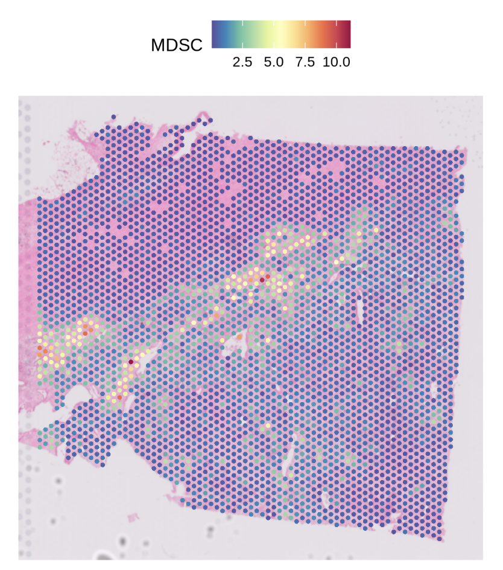
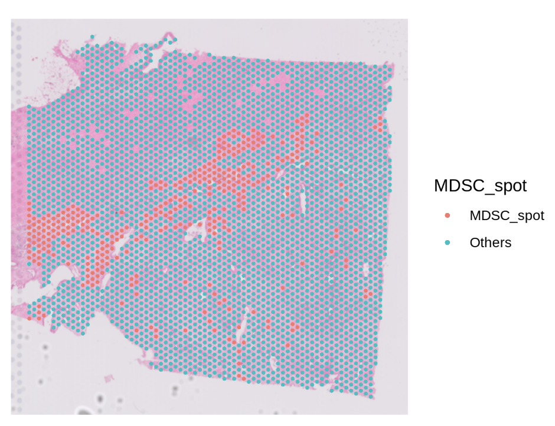
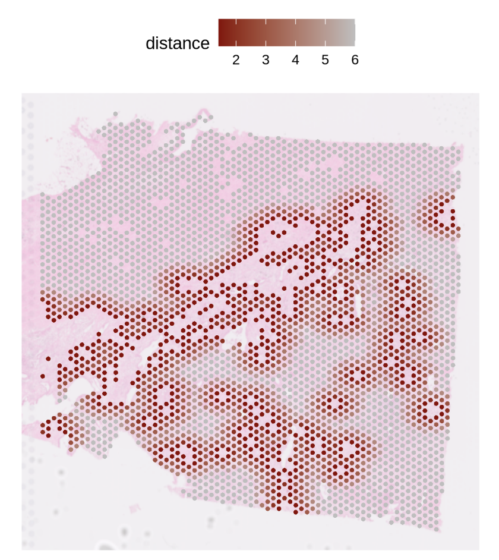
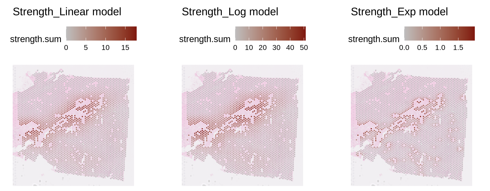
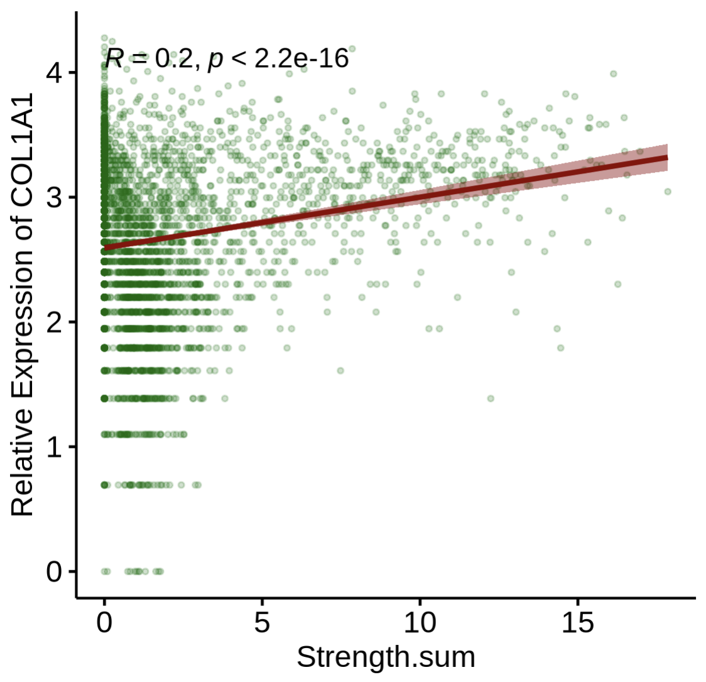
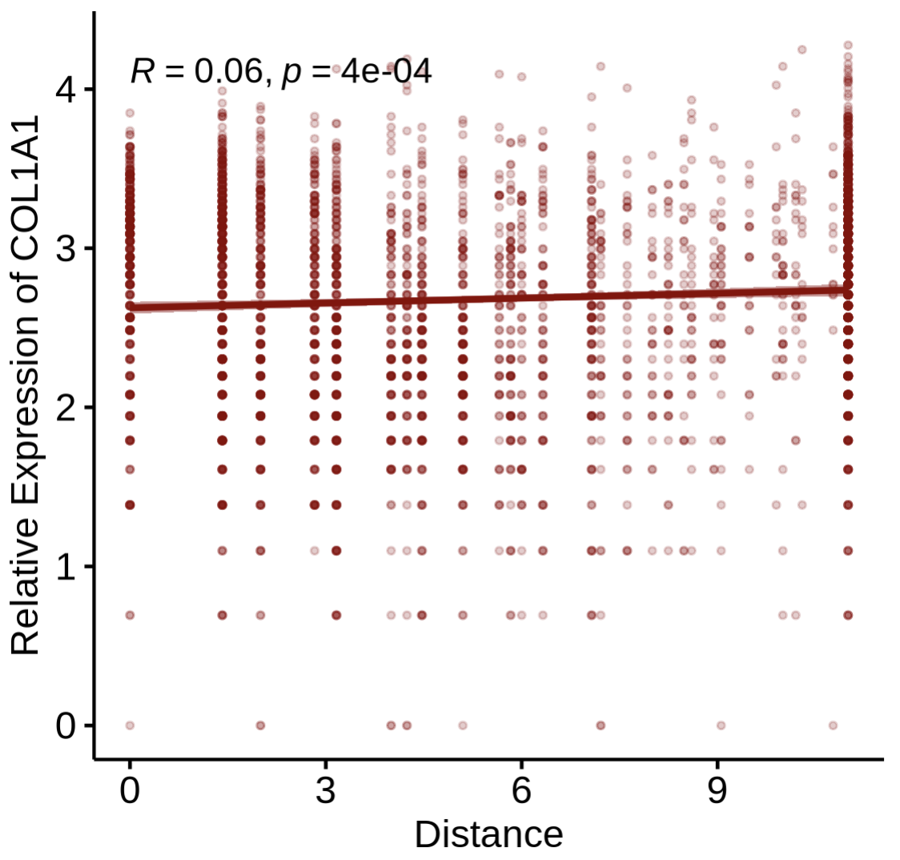
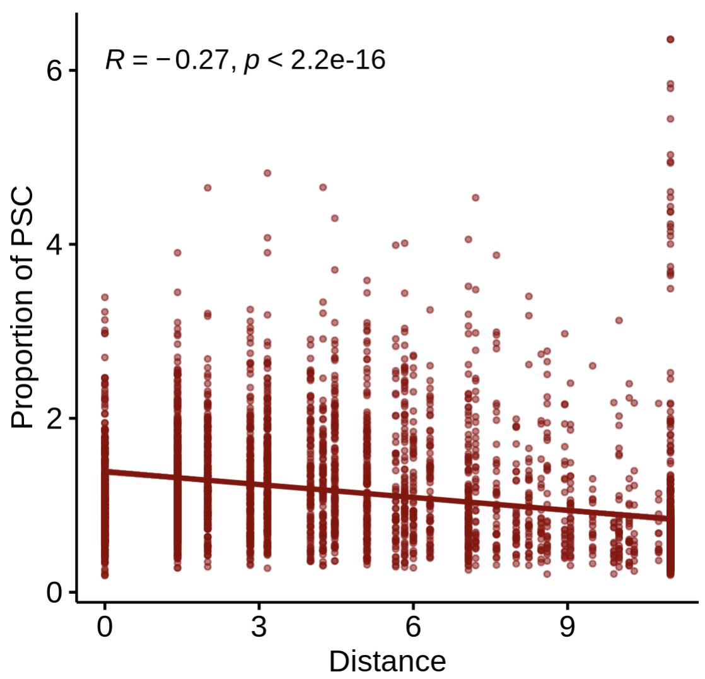

10x Visium Tutorial (PDAC demo)
This page demonstrates a minimal, runnable (“dry-run”) object → Step1–Step4 workflow to showcase how stGrads analyzes 10x Visium data.
The demo dataset references: Khaliq AM, Rajamohan M, Saeed O, et al. (2024) Nat Genet. 56(11):2455–2465. doi:10.1038/s41588-024-01914-4.
Prepare a lightweight Visium object
Use any Visium sample’s Space Ranger
outs/folder. Below is a small, fast setup to get a dry-run object calledst1.t1. The sample was used in If you already havest1.t1built elsewhere, skip to Step1.
# Core packages
library(Seurat)
library(ggplot2)
library(patchwork)
# stGrads package
# If your package is installed with namespace 'stGrads', use:
library(stGrads)
#! If you have download the PDAC_update.rds
# Example directory structure
# data/PDAC/
# └─ Patient01_Primary/
# └─ outs/
# ├─ filtered_feature_bc_matrix.h5
# └─ spatial/
# ├─ tissue_lowres_image.png
# ├─ scalefactors_json.json
# └─ tissue_positions.csv (or tissue_positions_list.csv)
data_root <- "data/PDAC"
sample_id <- "IU_PDA_T1"
st1.t1 <- Load10X_Spatial(
data.dir = file.path(data_root, sample_id, "outs"),
filename = "filtered_feature_bc_matrix.h5",
assay = "Spatial",
slice = sample_id,
filter.matrix = TRUE
)
# Optional: subset to speed up demo (e.g., keep 300–500 spots)
if (ncol(st1.t1) > 500) {
set.seed(1113)
st1.t1 <- subset(st1.t1, cells = sample(colnames(st1.t1), 500))
}
SpatialFeaturePlot(st1.t1,features = 'MDSC',pt.size.factor = 4e3)

Run the stGrads Visium Demo (Step1–Step4)
The following steps mirror your
Demo_for_Visium.r. Each step begins with a###header and includes compact notes about arguments and expected outputs.
Step1 — Find primary infiltration spots of a target cell type
Goal: identify “primary” spots for a chosen cell type (e.g., MDSC) based on cell type proportion and a quantile cutoff. Key args:
celltype_prop: column storing the proportion of a specific cell type per spot.celltype: name of the new classification column to write (e.g.,"MDSC_spot").probs: quantile cutoff (e.g.,0.9means top 10% by proportion → labeled as primary).
# Find primary infiltration spots of neutrophils (here using MDSC as the example)
# celltype_prop: given proportion column for target cell type
# celltype: output label column
# probs: quantile cutoff (q90)
st1.t1 <- FindPrimSpot(
seurat.obj = st1.t1,
celltype_prop = 'MDSC',
celltype = 'MDSC_spot',
probs = 0.9
)
# Inspect classification counts (example output is illustrative)
table(st1.t1$MDSC_spot)
# MDSC_spot Others
# 353 3177

Step2 — Compute nearest-spot distances and (optionally) interaction strength
Goal: for each “primary” (reference) spot, compute nearest neighbors (by ring distance) and optionally a strength metric based on a chosen model. Key args:
celltype: the classification column created in Step1 (e.g.,"MDSC_spot").pheno_choose: list of specific reference spots (generally NOT recommended, keepNULL).calc.strength: whether to calculate strength between reference and neighbors.model:'Linear' | 'Log' | 'Exp'strength decay model.max.r: how many distance rings to evaluate (Visium tip:max.r = 4≈ 200 μm if spot pitch ≈ 55 μm).
df.res <- CalcNearDis(
st1.t1,
celltype = 'MDSC_spot',
pheno_choose = NULL, # NOT RECOMMENDED now
calc.strength = TRUE,
model = 'Linear', # 'Linear' | 'Log' | 'Exp'
max.r = 10 # for Visium you can use 4; here 10 shows a wider range
)
# df.res is a data.frame summarizing nearest-ring relationships (and strength if requested)
head(df.res)
Step3 — Visualization (basic distance map)
Goal: visualize nearest-spot distance rings around primary (reference) spots.
PlotNearDis(
st1.t1,
nearest_ref_info = df.res,
color = c('darkred','gray'),
shape = 21,
max.dis = 6,
image.alpha = 0.5,
pt.size.factor = 4e3
)

Step3 — Visualization (interaction strength map)
Goal: visualize the strength profile (as defined in Step2) from reference to neighbors.
PlotStrengthDis(
st1.t1,
df.res,
color = c('gray','darkred'),
image.alpha = 0.5,
pt.size.factor = 4e3
)

Step4-1 — Correlate gene expression with interaction strength
Goal: examine how gene expression relates to computed strength. Key args:
layer/assay: which data layer/assay to read expression from (e.g.,layer='data',assay='SCT').gene: gene symbol of interest (e.g.,"COL1A1"in PDAC stromal context).
PlotStrengthExpr(
st1.t1,
df.res,
image.alpha = 0.5,
pt.size.factor = 4e3,
layer = 'data',
assay = 'SCT',
gene = 'COL1A1'
)

Step4-2 — Correlate gene expression with distance
Goal: relate expression to distance (rather than strength) from reference spots.
PlotDisExpr(
st1.t1,
df.res,
ref_col = c('darkred'),
gene = 'COL1A1',
log.trans = FALSE
)

Step4-3 — Correlate cell-type proportion with distance
Goal: test whether the proportion of another cell type changes with distance from the reference spots.
PlotDisProp(
st1.t1,
df.res,
ref_col = c('darkred'),
prop_cell = 'PSC' # name of the proportion column for the target cell type
)

Tips & Notes
Reference label: ensure the Step1 label (
'MDSC_spot') indeed contains the “primary” references.Distance scale: for Visium,
max.r = 4is often a good biological radius (~200 μm); tune to your tissue.Model choice:
'Linear','Log', and'Exp'encode different decay assumptions for strength—pick what best matches your biology.Reproducibility: fix a random seed if you subselect spots for demos; re-run on full data for publication figures.
Session info
sessionInfo()
R version 4.3.3 (2024-02-29)
Platform: x86_64-conda-linux-gnu (64-bit)
Running under: CentOS Linux 7 (Core)
attached base packages:
[1] stats graphics grDevices utils datasets methods base
other attached packages:
[1] ggpubr_0.6.0 ggplot2_3.5.1 stringr_1.5.1 Seurat_5.3.0
[5] SeuratObject_5.2.0 sp_2.1-4 stGrads_0.1.1